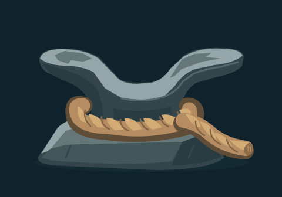
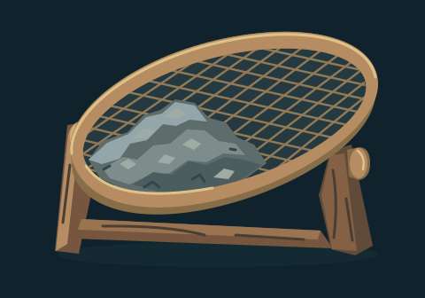
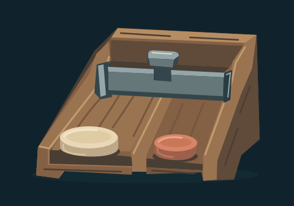
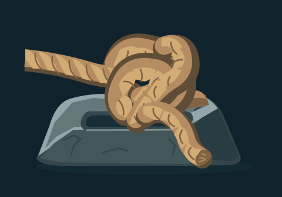
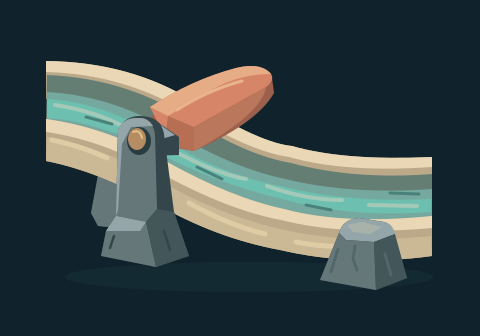
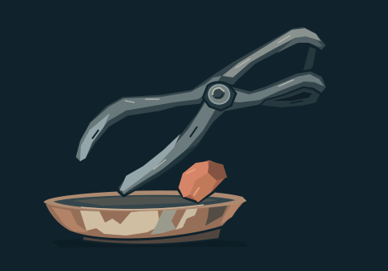
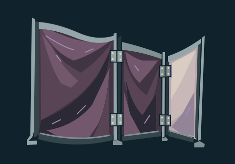
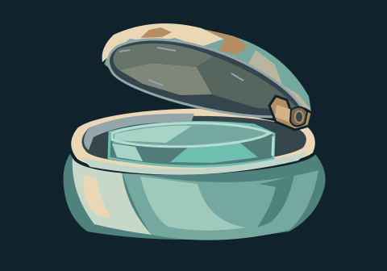
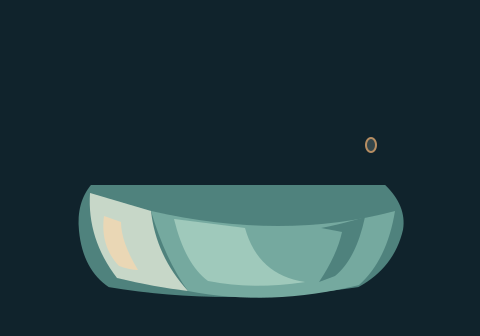

Quay mooring cleat
candidate

Connected broad stone horns and one wrapped rope make a clear quay mooring object. The rope contour stays visible at 80px; no boat or story action is implied.
SVG sourceOPTIONAL FUTURE SOURCE STUDIES
Six new concepts, three useful authored derivatives and one retained failed authored construction. No accepted canon or runtime adoption. Authored parents depend on PR #141; serial registration remains staged.
Scope, dependency and import recipe · Purpose index · Checks and limits
Enlarged/native/compact contact · Exact call and lineage · Packed original
candidate

Connected broad stone horns and one wrapped rope make a clear quay mooring object. The rope contour stays visible at 80px; no boat or story action is implied.
SVG sourcecandidate
Hinged frame, blank wax tablet and fitted rolling bar remain distinct at compact size, without duplicating the earlier screw press.
SVG sourcecandidate-with-caveat

Stand, tilted rim and coarse ash mass read well. Fine bronze mesh becomes a textured field at 80px; retain the broad mass rather than relying on individual apertures.
SVG sourcecandidate-with-caveat

Supported sliding stop and two payment counters read clearly. The two floor channels are subtler at compact size; source study, not a finished interaction affordance.
SVG sourcecandidate-with-caveat

Heavy cord and slotted stone support have a strong silhouette; intertwined strand continuity remains stylized and would need close review for a final mechanical knot.
SVG sourcecandidate

Fitted pivot, two support saddles, thick ceramic channel and aqua water strip read clearly. Flat end cuts describe a channel section, not a complete spring or fluid simulation.
SVG sourceMatched parent/derivative comparison · Exact changes, shared parents and judgments
candidate-with-caveat · authored

Coal now meets the dish surface at rest, avoiding a claimed two-jaw lift. The open tool remains an illustration pose rather than a physically simulated placement. Original suspended-coal study remains on hold.
SVG statecandidate · authored

Existing plum folds and pale rear panel are now visible; posts and hinges retain their supported contour. At 80px, broad cloth planes remain distinct. This derivative addresses the earlier rigid-gray material caveat without inventing new geometry.
SVG statecandidate-with-caveat · authored

Continuous curved body and broad glaze highlights read more like ceramic at both sizes. Original lid still has faceted engraved planes; no physical glass/transparency claim. Original stone-like candidate remains unchanged.
SVG statehold · authored

Rejected authored construction: an incorrect path selection removed lid/rim and left a floating hinge ring. Retained as an explicit failed sibling; technical SVG validity is not visual acceptance.
SVG state